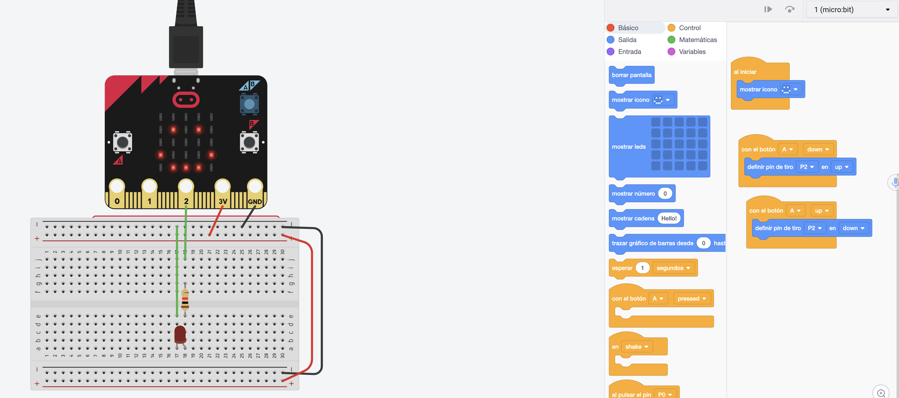

Saltar la navegación
Colección de prácticas microbit realizadas con Tinkercad.

https://makinandovelez.wordpress.com
Obra publicada con Licencia Creative Commons Reconocimiento Compartir igual 4.0
Creado con eXeLearning (Ventana nueva)